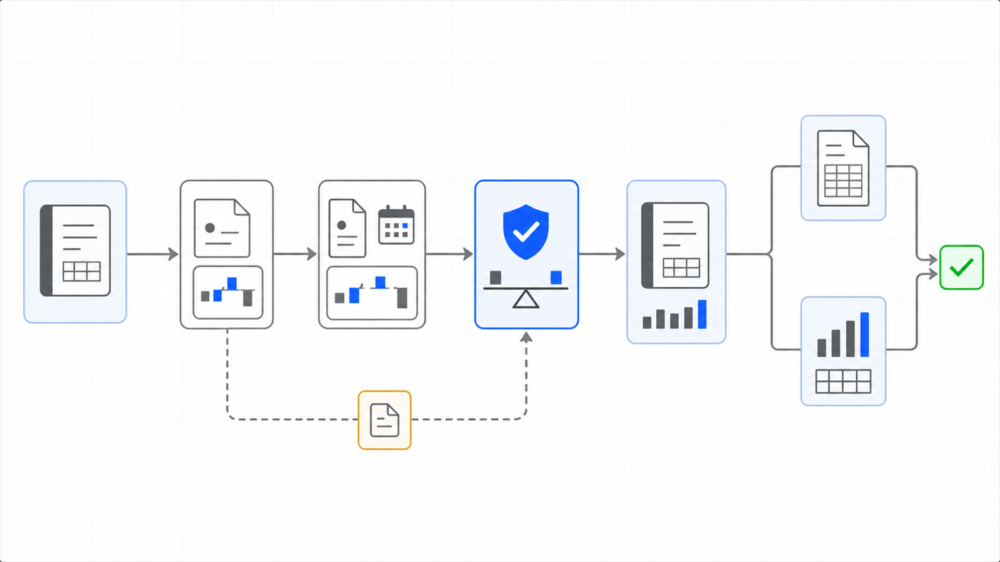

9,6481
Tests
the collected checks that pin this engine's behavior
ENGINE 51
SFS-E51-PRA · INSURANCE & COMPLIANCE · REV 2026-08-14 · PRODUCTION
PRODUCTION = runnable end-to-end, CI-backed, full test suite passing. All data fictional and seeded.
The carrier's auditor asks what the warranty work actually cost. This engine answers from the ledger's own printed totals - or refuses.
Once a year a general-liability carrier audits the policy: did the insured incur the cost the premium was underwritten on? The raw material is unglamorous - fixed-width job-cost print reports out of a construction ERP, a certificate-of-insurance coverage listing, and a policy period that never lines up with a fiscal year. In practice somebody re-keys the prints into a spreadsheet, and the workpaper's credibility rests on nobody having dropped a line. This engine reads the print instead, and it exploits the one thing a print report carries that a re-key loses: the report's own per-job totals. Every parsed job must tie its printed total to the cent, over the union of jobs parsed and jobs printed, or the engine refuses to produce a workpaper at all. What survives is cut to the audit window (inclusive on both ends), cross-referenced against the coverage listing, and triaged line by line under a fixed-precedence policy - journal entries that never had a vendor, clearing accounts, wrap-enrolled vendors, materials-only and professional exemptions, vendors whose required coverage is current at the window end, and the remainder marked for certificate chase. The output is a byte-stable audit-response package: JSON and Markdown, integer cents throughout, every line in exactly one bucket.
A premium-audit workpaper fails quietly. The re-keyed spreadsheet still foots - it just foots to the wrong number, because a page break swallowed a line, a reversal row lost its vendor, or a clearing account was chased for a certificate it can never have. The defect classes this engine is built against are exactly the ones a tired preparer produces at a print boundary: the vendor that continues onto a reversal line without being restated, the journal-entry line with a single reference token instead of two, the numeric clearing account whose name is lowercase in a report where every vendor is uppercase, the job whose printed total simply is not there. Each one is either parsed correctly by construction or converted into a refusal that names the job and the cent delta. The engine's stance is the portfolio's stance: an untied workpaper is not a draft, it is a defect - and no material output rests on a single pass's word, because the print report itself is the second opinion.
Five stages run in build order. The parser and its reconciliation gate come first because nothing downstream is allowed to exist if the parse does not tie; the window cut, coverage cross-reference and triage are pure functions over what survived; the emitters are byte-stable so a re-run is a diff, not a judgment call.
A premium audit asks a simple question - what did the covered work actually cost during the policy period - and the honest answer lives in a print format designed for paper. Re-keying it into a spreadsheet destroys the one safeguard the print carries: its own totals. The workpaper that results is checked by the person who typed it, against the file they typed. This engine keeps the print's self-description as the verification anchor and makes the parse prove itself against it, job by job, to the cent, before any triage or period cut is allowed to exist.
A clean print parses, ties, and packages end to end5. The CLI generates a fictional print report, parses it, ties every job to the report's own printed totals, cuts the audit window, triages every line, and writes the JSON and Markdown package. The demo's numbers are fictional; the discipline is not.
A printed total off by one cent is a refusal, not a variance6. One planted defect nudges a single job's printed total by one cent. The parse completes, the reconciliation gate fails exactly that job with a delta of exactly one cent, and no package is produced. The failing job is named in the refusal.
A job that prints a total but parses no lines cannot slip through7. Reconciliation runs over the union of parsed jobs and printed-total jobs. A truncated parse that silently dropped an entire job fails against the printed side of the union - the case a sums-only check would wave through.
| Command | Operation | Output | Exit | Artifacts |
|---|---|---|---|---|
python -m premaudit_engine --seed 7 | generate a fictional print report, parse and verify it, build the triaged package | line count and window total in cents; package files under out/ | 0 built / 2 refused (reconciliation failure) | out/package_seed7.json, out/package_seed7.md |
python -m pytest -q | run the engine suite: curated cases plus the pipeline, money and window grids | 9,648 tests | 0 green | none |
SWEEP=1 python -m pytest -q | widen the pipeline grid tenfold for the exhaustive sweep | the same invariants over 24,000 seeds | 0 green | none |
| Measure | Result |
|---|---|
| Engine tests8 | 9,648 tests collected live collection from the engine directory |
| Pipeline grid9 | 2,400 seeded end-to-end cases generate -> parse -> tie -> cut -> triage, every seed |
| Suite runtime10 | ~7 seconds the whole suite, grids included |
The reconciliation gate is unconditional: no package exists unless every job ties. Human judgment enters after the engine - on the period basis and on chasing the certificates the triage marked - never inside the tie.
Deterministic envelope. seeded fictional inputs, read-only operation, offline default mode.
Demo gate. 0 on the bundled demo seed - the clean corpus ties; defect seeds exit 2 by design
| Severity | Verdict | Action |
|---|---|---|
| All jobs tie printed totals | PACKAGE | carry the package into the audit response; the period ruling can be made later from the retained dual cut |
| Any job fails reconciliation | REFUSAL | fix the source print or the parse - the refusal lists each failing job with parsed vs printed cents |

Distribution: public repository, MIT license.
One conversation: you describe the work that consumes your team's month; we tell you plainly what this engine can take over, what it can't, and what a scoped first phase would cost. Your people keep approval authority.
Book a free consultation